Autosar局部网络管理（PN：Partial Network）开发中，细枝末节的东西很多，对于新进学习者，一时半会儿很难理解透彻（我就是一个典型的例子）。本文，基于CAN总线，以PNC的收/发流程为核心，聚焦如下几点：
PNC信息涉及的交互模块
PNC Gateway原则
PNC信息的接收流程
PNC信息的发送流程
PNC状态机切换示例
PNC信息的交互及作用到的模块包括：CanTrcv、CanIf、CanNM、CanSM、PduR、COM、BswM、ComM、RTE、SWC等，如下所示：
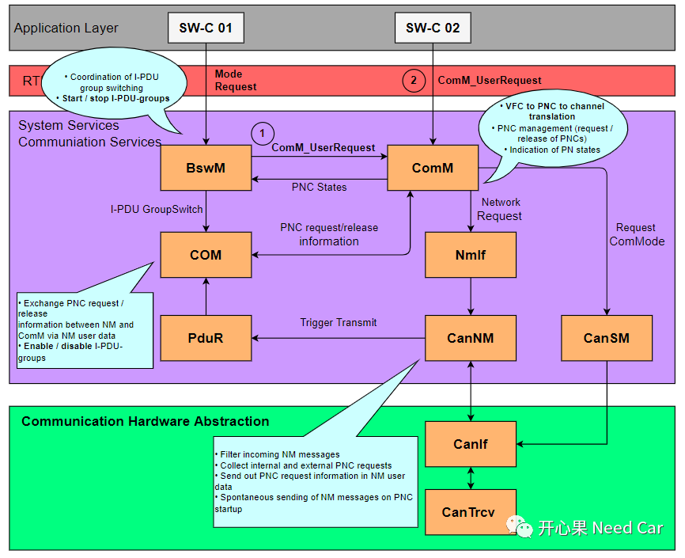
上图中，主要解释一下EIRA（External Internal Request Array）的“External”和“Internal”。
External：主要是指通过ERA Rx信号接收外部请求信息，eg：收到包含PNC信息的NM Msg。
Internal：主要是指调用ComM_UserRequest()接口的“User”，这里的User包括：Runnable entities、SW-Cs、BswM 以及DCM 。
PNC Gateway原则主要适用于网关节点ECU，对于网关节点ECU，包含多个物理通道，当PNC跨网段时，则需要将PNC信息路由到目标网段，进而实现不同网段PNC的管理。如下图：PNC 16关联ECU3和ECU6，ECU3属于CAN 2 BUS，ECU6属于CAN 3 BUS，所以，PNC16信息需要在CAN 2 BUS和CAN 3 BUS之间路由，以便于管理PNC 16的网络状态。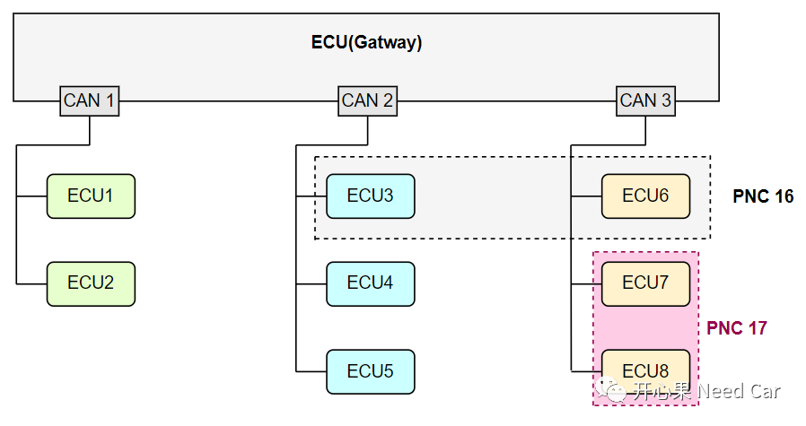
网关节点ECU的多个物理通道，会对应到ComM模块的Channel。根据Autosar的要求，ComM负责PNC信息的路由。ComM会依据每个Channel的PNC Gateway类型，处理PNC信息的路由。对于网关ECU，每个Channel的PNC Gateway可以配置成两种类型：Active PNC Gateway和Passive PNC Gateway。（一）PNC #n信息由Passive Channel接收
假设：PNC #n关联Channel 1、Channel2、Channel3、Channel4。
当Passive Channel接收到PNC #n = 1时，需要将PNC #n = 1路由到Active类型的目标Channel，注意：这里的目标Channel包括接收PNC #n = 1的Channel。
对于Passive Channel接收的PNC #n = 1信息，不能路由给Passive类型的Channel。如下所示：
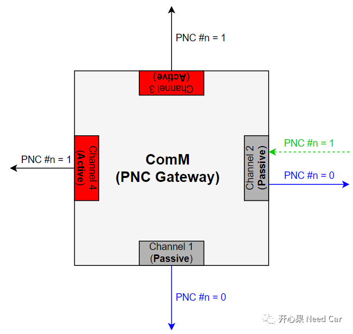
（二）PNC #n信息由Active Channel接收
当Active Channel接收到PNC #n = 1时，需要将PNC #n = 1路由给Active/Passive类型的目标Channel，注意：这里的目标Channel包括接收PNC #n = 1的Channel。如下所示：
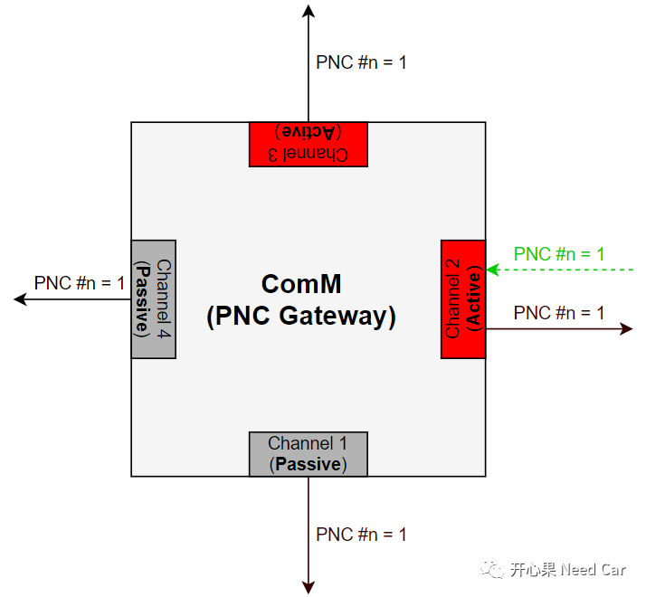
在聊PNC信息接收流程之前，先要清楚PNC信息放在哪。NM PDU结构如下所示，PNC信息存放于User Data部分。项目实际中，每个PNC占用一个Bit，以PNC ID标识。工程项目中，PNC ID一般从16开始，如果全部使用6个Bytes，则PNC ID的范围是：16~63。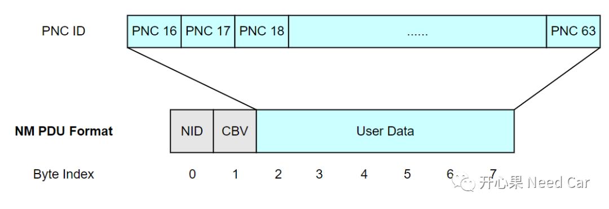
如何将User Data部分的PNC信息，告知控制PNC状态的ComM模块呢？先看一下PNC信息接收的模块链路，如下所示：
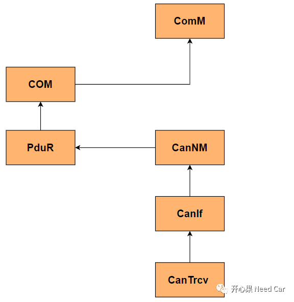
对于网关ECU，接收PNC信息的信号需要配置两个：ERA_Rx_Signal和EIRA_Rx_Signal。具体的PNC信息数据流接收如下所示：
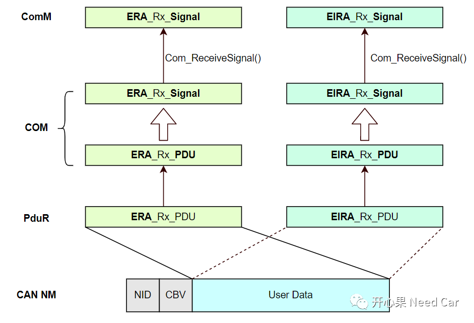
（1）CanIf根据PDU ID识别到NM PDU，之后根据CanNM提前注册的回调函数（CanNm_RxIndication()）将NM Msg信息送给CanNM模块；
（2）CanNM模块将User Data(一般6 Bytes全部存储PNC信息)的PNC信息映射到两个接收PDU，一个ERA_Rx_PDU，一个EIRA_Rx_PDU。
（3）PduR模块根据配置的路由路径，将ERA_Rx_PDU和EIRA_Rx_PDU路由到目标上层COM，COM模块进一步将PDU拆分为Signal，实际工程中，ERA_Rx_PDU拆分成一个ERA_Rx_Signal，EIRA_Rx_PDU拆分成一个EIRA_Rx_Signal；
（4）ComM通过COM的标准接口Com_ReceiveSignal()，即可读取ERA_Rx_Signal和EIRA_Rx_Signal信号中的PNC信息。
注意：
首先讨论，何为终端ECU？如下图，一般将网关ECU下连接的ECU称为终端ECU，终端ECU不再外接其他ECU。注意：这里讨论同种总线类型连接的ECU，eg：CAN总线。下图中的ECU1~ECU8均可看作终端ECU。
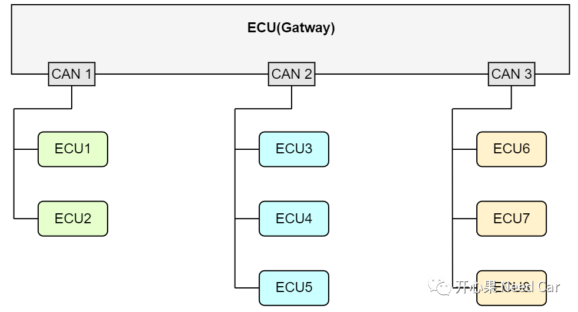
终端ECU与网关ECU的不同点：终端节点不需路由PNC信息，因此，可以不使用ERA，仅配置EIRA即可。终端节点PNC信息的接收流程如下所示：
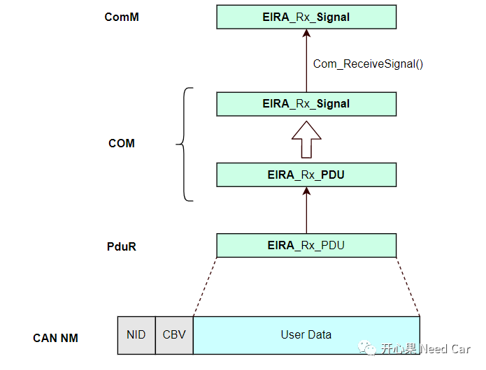
3、ERA_Rx_Signal/EIRA_Rx_Signal的PNC #n何时复位（ = 0）？
既然CanNM只将PNC #n = 1的信息送给COM，ERA_Rx_Signal/EIRA_Rx_Signal的PNC #n何时复位（ = 0）？答：PnResetTimer超时。当收到外部或者内部PNC #n请求时，PnResetTimer重置（eg：2.95s），如果外部或者内部不再请求PNC #n，当ERA Timer和EIRA Timer超时，将CanNM存储的PNC #n复位（=0），并通知COM更新ERA_Rx_Signal、EIRA_Rx_Signal的PNC #n（ = 0）。
Step1：ComM根据每个PNC的局部网络状态，置位/复位COM中的PNC #n Bit；Step3：COM层中的PNC信息（User Data）+ CanNM Header（NID+CBV） = NM PDU，调用发送接口完成NM PDU的发送。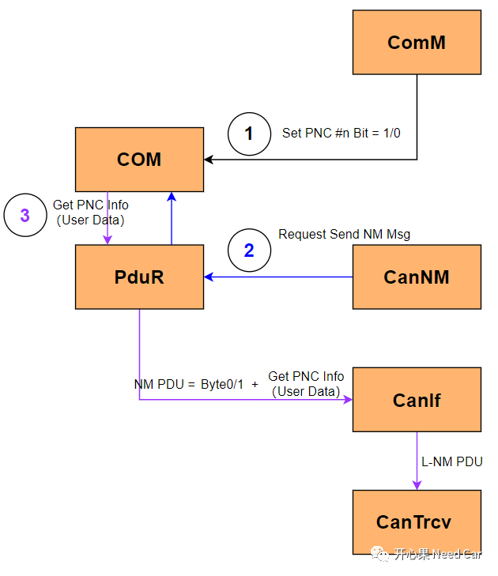
PNC #n Bit何时置位（= 1），何时复位（= 0）呢？按照Autosar的解释：当PNC进入PNC_REQUESTED子状态时，对应的PNC #n置位（= 1），当PNC离开PNC_REQUESTED子状态时，对应的PNC #n复位（= 0）。这里的PNC #n置位/复位，由ComM调用Com_SendSignal()接口完成，操作的对象为EIRA_Tx_Signal，所以，ComM置位/复位COM层的发送PNC #n Bit。发送的PNC信息存在何处呢？每个Channel，发送的PNC信息存储在COM的EIRA_Tx_Signal中。每当CanNM的CANNM_MSG_CYCLE_TIME到期以后（eg：1s），CanNM触发NM Msg的发送请求（Trigger），此时CanNM的User Data部分信息为空（Empty），需要通过PduR到COM层获取User Data（PNC信息）数据，形成完整的NM PDU，之后调用CanIf_Transmit()将NM PDU发送出去，如下所示：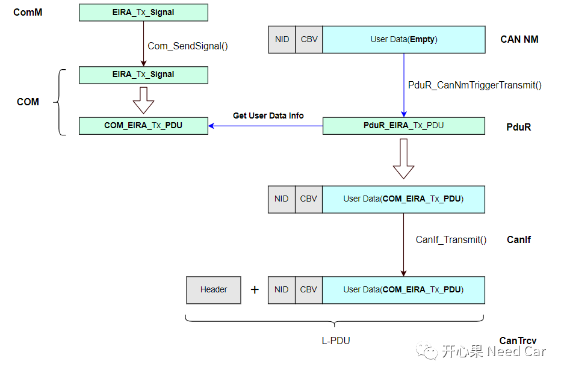
假设：某网关节点包含两路CAN：CAN1和CAN2，且均关联PNC 16，CAN1和CAN2的PNC Gateway类型为Active。提示：不考虑User请求。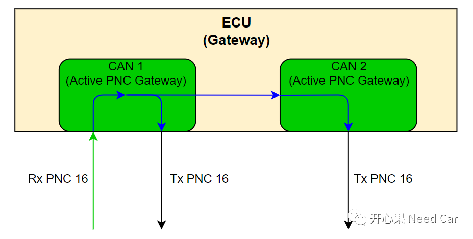
CAN1和CAN2对应的局部网络PNC16的网络状态如何变化呢？发送的网络管理报文，PNC 16 Bit如何变化呢？如下所示：
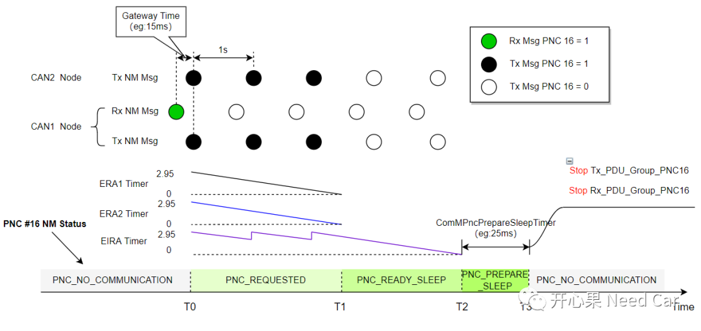
T0时刻，假设CAN1收到一帧PNC 16 = 1（局部网络请求）的网络管理报文，ComM通过CAN1的ERA1_Rx_Signal获取PNC16 请求信息，PNC 16的网络状态由PNC_NO_COMMUNICATION模式切换到PNC_REQUESTED状态，由于PNC16状态进入PNC_REQUESTED状态，COM层的EIRA1_Tx_Signal、EIRA2_Tx_Signal对应的PNC 16 Bit置位（= 1），所以，CAN1和CAN2发送的NM Msg中，PNC 16 = 1。此时，ERA1 Timer和ERA2 Timer重置为2.95s（假设：PnResetTimer = 2.95s），CAN1和CAN2共用的EIRA Timer也重置为2.95s；T0~T1期间，CAN1和CAN2每次发送网络管理（eg:周期1s），由于PNC 16 = 1，EIRA Timer均重置为2.95s；
T1时刻，由于CAN1和CAN2均没有收到内部和外部的PNC 16请求，ERA1 Timer 、ERA2 Timer超时，使得PNC 16局部网络释放，PNC 16局部网络状态由PNC_REQUESTED进入PNC_READY_SLEEP。同时，ComM将EIRA1_Tx_Signal、EIRA2_Tx_Signal对应的PNC 16 Bit复位（= 0）。T2时刻，EIRA Timer超时，PNC 16网络切换到PNC_PREPARE_SLEEP状态，同时启动ComMPncPrepareSleepTimer（eg:25ms）；T3时刻，当ComMPncPrepareSleepTimer超时以后，PNC 16的网络状态进入PNC_NO_COMMUNICATION模式，同时，PNC 16关联的Tx_PDU_Group停发，Rx_PDU_Group不再接收。所以，当PNC #n释放时，对应PNC #n的Tx_PDU_Group会延时2.95s+25ms停发。- 节点在不同的网段，PNC #n Bit置位/复位的时机需要保持一致；
- CAN1收到PNC 16 = 1的网络管理报文，调用CanNM_PassiveStarup()接口，完成被动唤醒。之后，PNC 16 = 1信息路由到CAN1和CAN2，ComM主动请求两个网段的网络（调用Nm_NetworkRequest()），使得CAN1和CAN2网络状态由BSM（Bus Sleep Mode）进入RMS（Repeat message state）状态，如果CAN1和CAN2使能了快发模式，则进入开发模式。
假设：VCU包含3路CAN（CAN1、CAN2、CAN3），各路CAN与PNC的关联关系如下所示：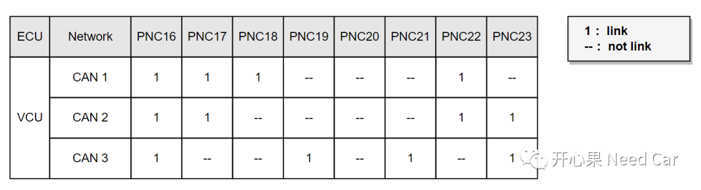
问题：CAN3收到的网络管理报文中，PNC18 = 1，会路由给CAN1吗？答：不会。为什么呢？每个节点接收PNC信息的时候，只关注本节点的PNC，比如：CAN3，只接收PNC16、PNC19、PNC21、PNC23。如果收到PNC18，CAN3会直接忽略。
点击下方关注，一起聊聊Autosar/嵌入式，如果需要，联系作者进群，给你更专业的解答